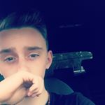
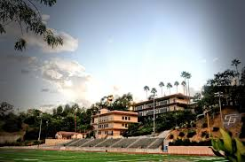
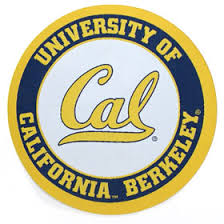
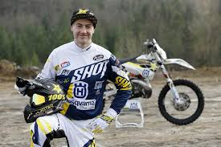
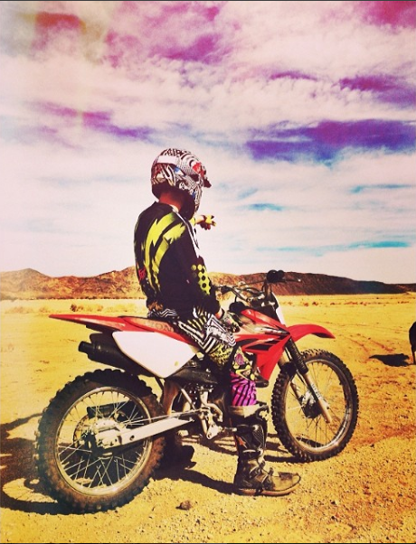
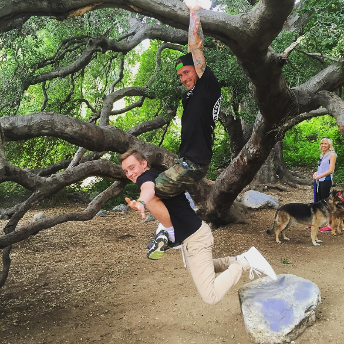

This is Brennan's "About Me" Page!
Hello, this is me!
I am 16 years old and I attend Saint Francis Highschool
Some of my personal goals include maintaining a 4.0 GPA and learning a lot more about computers
Another one of my goals is to attend Berkeley College California
One thing that makes me unique is that I ride motorcycles and it is something I would possibly look into as a career. I would love to be a professional Enduro Motocross Rider. One of the people that I look up to is Graham Jarvis, the 2012-2016 Romaniacs Enduro Race winner
My Motorcycle
Another person I look up to is my brother. When I was younger, I always wanted to do what my brother did and I always wanted to be like him! This is him below.
